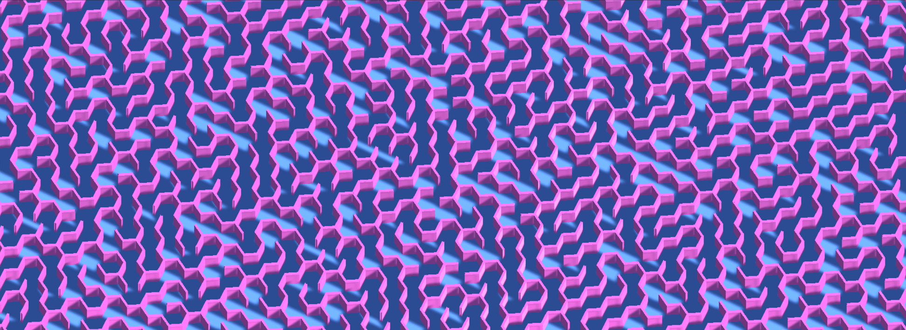

Labyrinthes
Contexte
Réalisation
Concepts
Définition d'un labyrinthe


D'après Wikipedia, "Un labyrinthe est un tracé sinueux, muni ou non d'embranchements, d'impasses et de fausses pistes destiné à perdre ou ralentir celui qui cherche à s'y déplacer."
Il y a cependant quelques règles à respecter pour qu'un labyrinthe soit dit "parfait".
Chaque cellule du labyrinthe doit être réliée aux autres et ce, par un chemin unique (on parle de surface connexe).
Il ne doit ainsi pas y a avoir de boucles ou de zone fermée.
Il existe de nombreuses méthodes pour créer un labyrinthe, une des plus commune est la génération par "suppression de murs"
On part d'une zone remplie de murs. Toutes ces zones entourées de murs seront appelés cellules.
L'objectif est de relier ces cellules en supprimant les murs entre elles, afin de recréer cette impression de dédale.
Cellule
Dans sa forme la plus simple, une cellule est composée de murs (quatre pour une cellule de forme carrée) et d'une position.
Sa position possède une coordonée X (axe des abscisses) et Y (axe des ordonnées). Cette position permet de la différencier parmis les autres cellules qui peuvent l'entourer.
Nous verrons que certaines méthodes de création demandent à ce que les cellules possèdent des informations supplémentaires.
Comme une valeur indiquant si cette cellule a été visitée ou bien une donnée séparant les cellules en sous-zones du labyrinthe.
Précisions techniques
Le code suivant montre la représentation informatique d'une cellule.
On retrouve les entiers X et Y correspondant à la coordonée de la cellule.1 public class MazeCell 2 { 3 public GameObject[] walls; 4 public int x, y; 5 6 public MazeCell(int x, int y) 7 { 8 this.x = x; 9 this.y = y; 10 } 11 }
La taille du tableau walls sera fixé et son contenu rempli pendant la génération d'un tableau rempli de cellules.
L'utilisation de classe rend le concept de cellule extrement modulable. Pour chaque méthode de génération, nous pourrons créer une classe héritant de MazeCell et ainsi n'avoir que les données dont nous avons besoin.
Maintenant que nous possédons notre cellule sous forme de préfab, nous pouvons à l'aide d'une longueur et d'une largeur, faire apparaitre nos cellules.
Il faut pour cela, parcourir chaque case de la coordonée [0, 0] à la coordonée [longueur - 1, largeur - 1] (-1, car on compte depuis 0).
Tableau de cellules
C'est grâce à ces cellules, qui, une fois stockées dans un tableau en deux dimensions, permettent de représenter informatiquement un labyrinthe

Dans le cas d'un labyrinthe avec des cellules carrés, on voit de manière nette la relation entre le labyrinthe et sa représentation en tableau deux dimensions.
Habituellement, la coordonée [0, 0] des tableaux en deux dimensions se situent en haut à gauche.
Afin de simplifier le placement de nos cellules dans l'espaces, la coordonée [0, 0] se trouvera en bas à gauche du tableau.
Il sera ainsi plus aisé de convertir les coordonées des cellules (deux dimensions) dans l'espace (trois dimensions).
Maintenant que nous savons comment sont stockées nos cellules dans un tableau, nous pouvons essayer de les placer dans l'espace.
Le plus simple est d'utiliser les "Unity's Prefab" https://docs.unity3d.com/Manual/Prefabs.html qui nous permettent de créer et configurer à l'avance,
un objet que nous pourrons réutiliser pendant l'éxecution du programme.
Voici donc le prefab, de notre cellule carrée.
D'après notre tableau deux dimensions, l'espacement entre chaque cellule est de 1 (sur l'axe X et Y), chaque cellule devrait donc faire une taille de 1 par 1.
Illustrer avec cellule + grid dans menu prefab
Cependant, lorsque l'on crée un labyrinthe avec ces dimensions, certaines paroies possèdent des angles peu esthétique.(cf photo)
Passer la taille des murs à 1,1 nous permet de résoudre ce problème. Les murs des cellules voisines seront désormais superposés.
Cela ne pose pas de problème mais nous verrons comment les supprimer, dans le but d'optimiser les performances du programme.
Maintenant que nous possédons notre cellule sous forme de préfab, nous pouvons à l'aide d'une longueur et d'une largeur, faire apparaitre nos cellules.
Il faut pour cela, parcourir chaque case de la coordonée [0, 0] à la coordonée [longueur - 1, largeur - 1] (-1, car on compte depuis 0).
Précisions techniques
Voici le code permettant de créer un espace remplie de cellules.
A l'aide de la commande Instantiate de Unity, ce code nous permet de créer dans l'espace une cellule pour chaque case de notre tableau deux dimensions mais également de l'initialiser pour lui donner ses valeurs.1 MazeCell[,] maze; 2 GameObject cell_prefab; 3 int height, width; 4 5 maze = new MazeCell[height, width]; 6 7 for(int y = 0; y < height; y++) 8 { 9 for (int x = 0; x < width; x++) 10 { 11 maze[y, x] = new MazeCell(y, x); 12 Vector3 position = new Vector3(y, 0, x); 13 GameObject cell = Instantiate(cell_prefab, position, Quaternion.identity); 14 15 cell.walls = new GameObject[4]; 16 maze[y, x].walls[0] = cell.transform.Find("TopWall").gameObject; 17 maze[y, x].walls[1] = cell.transform.Find("LeftWall").gameObject; 18 maze[y, x].walls[2] = cell.transform.Find("BottomWall").gameObject; 19 maze[y, x].walls[3] = cell.transform.Find("RightWall").gameObject; 21 } 22 }Labyrinthe rempli de mur

Suppression de murs entre cellules

Voyons maintenant comment relier deux cellules voisines.
Relier veut en réaliter dire, supprimer les murs qui séparents ces cellules.
Dans l'exemple suivant, nous voulons relier ces cellules voisines horizontalement. Pour ce faire, il faut supprimer le mur de droite de la cellule A et le mur gauche de la cellule B.
Précisions techniques
Pour nous simplifier la vie, faisons une fonction qui relie deux cellules voisines.
L'objectif est de supprimer le mur de chaque cellule en fonction de la position de son voisin.C'est à l'aide de la variable dir que nous pouvons savoir comment sont situées nos deux cellules.1 void LinkNeighbors(MazeCell cell_1, MazeCell cell_2) 2 { 3 Vector2 dir = new Vector2(cell_1.x - cell_2.x, cell_1.y - cell_2.y); 4 5 if (dir.y == -1) 6 DestroyWalls(cell_1.TopWall, cell_2.BottomWall); 7 else if (dir.y == 1) 8 DestroyWalls(cell_1.BottomWall, cell_2.TopWall); 9 else if (dir.x == -1) 10 DestroyWalls(cell_1.RightWall, cell_2.LeftWall); 11 else 12 DestroyWalls(cell_1.LeftWall, cell_2.RightWall); 13 } 14 15 void DestroyWalls(GameObject wall_1, GameObject wall_2) 16 { 17 Destroy(wall_1); 18 Destroy(wall_2); 19 }
En fonction de cette information, il ne reste plus qu'à supprimer les murs des cellules avec la fonction Destroy de Unity. SCHEMA ILLUSTRANT CALCUL DE POSITION DES CELLULES
Suppresion des murs superposés
Une fois le labyrinthe généré, nous pouvons supprimer les murs superposés restant.
Cela permet premièrement d'optimiser le programme (il y a moins d'entités à gérer) mais également d'éliminer certains "bugs" visuel où la texture d'un mur se confond celle du mur superposé.
PHOTO GLITCH + PHOTO PERFS
Précisions techniques
Pour chaque cellule, on vérifie qu'elle ne soit pas en bordure basse ou droite du labyrinthe (afin de ne pas ouvrir le labyrinthe).1 for (int y = 0; y < height; y++) 2 { 3 for (int x = 0; x < width; x++) 4 { 5 if (x < width - 1 && _maze[y, x].RightWall != null && _maze[y, x + 1].LeftWall != null) 6 Destroy(_maze[y, x].RightWall); 7 if (y < height - 1 && _maze[y, x].TopWall != null && _maze[y + 1, x].BottomWall != null) 8 Destroy(_maze[y, x].TopWall 9 } 10 }
Si cette cellule possède un mur droit et que la cellule à sa droite possède un mur gauche. On supprime le mur droit de la cellule actuelle.
Le processus est le même pour le mur du bas. Si la cellule scrutée et celle du dessous possèdent leurs murs voisins, on supprime le mur bas de la cellule actuelle.
Voici donc tous les concepts nécessaires pour créer un labyrinthe.
Avant de présenter les algorithmes de génération, voici une section montrant birèvement, comment ces concepts peuvent être réutilisées afin de créer des labyrinthes à cellules hexagonales regulières.
Cellules hexagonales
Un hexagone est un polygone à six sommets et six faces. On retrouve généralement cette forme géométrique sous deux orientations :

La seule différence avec la celulle carrée est le nombre de murs.
La classe précédemment définie reste correcte, la seule chose à modifier est l'attribution des murs de la cellule.
La dernière question à nous poser est comment peut-on représenter une grille hexagonale dans un tableau en deux dimensions ?
De nombreuses représentations existent déjà avec chacune des avantages et inconvénients.
La solution choisie est d'utiliser la même méthode que pour les cellules carrées. C'est une représentation simple à mettre en place,
cependant, elle s'avère peu pratique lorsque l'on souhaite relier des cellules entre elles.
Précisions techniques
Voici la première difficultée des grilles hexagonales. Selon l'orientation de l'hexagone, une cellule sur deux sera décalée.
PHOTOS ILLUSTRANT DECALAGE POUR POINT ET FLAT
Ce choix de représentation nous force donc à différencier les opérations, en fonction de l'orientation de l'hexagone.
Voici d'ailleurs un schéma illustrant comment sont situés les hexagones voisins à une cellule, en fonction de son orientation, mais également de son décalage précédemment mentionné.
REPRESENTATION VOISINS CELLULES HEXAGONALES
Algorithmes
Voici une sélection de plusieurs méthodes de génération.
Chacune possède ses avantages et ses inconvénients.
Backtracker
Probablement l'une des plus répandues (car l'une des plus simples), la méthode du backtracker (ou retour arrière en français) permet de systématiquement tester l'ensemble des décisions possibles.
Cette famille d'algorithmes est utilisée pour résoudre des problèmes algorithmiques comme de l'optimisation combinatoire ou des jeux, telle que le problème des dix dames LIEN ou la résolution de sudoku.
Appliqué à nos labyrinthe, en partant d'une grille remplie de murs, cette méthode a pour objectif de créer un chemin, en passant par toutes les cellules de notre labyrinthe.
De manière plus détaillée :
Chaque cellule du tableau possède un état visitée ou non (initialement mis à non-visitée). Depuis une cellule de départ, le programme va se déplacer aléatoirement sur une cellule non-visitée, voisine à la sienne (et définir son état comme visitée).
Dès lors que celle-ci ne possède plus de cellules voisines non-visitées, le programme revient sur ses pas jusqu'à en retrouver.